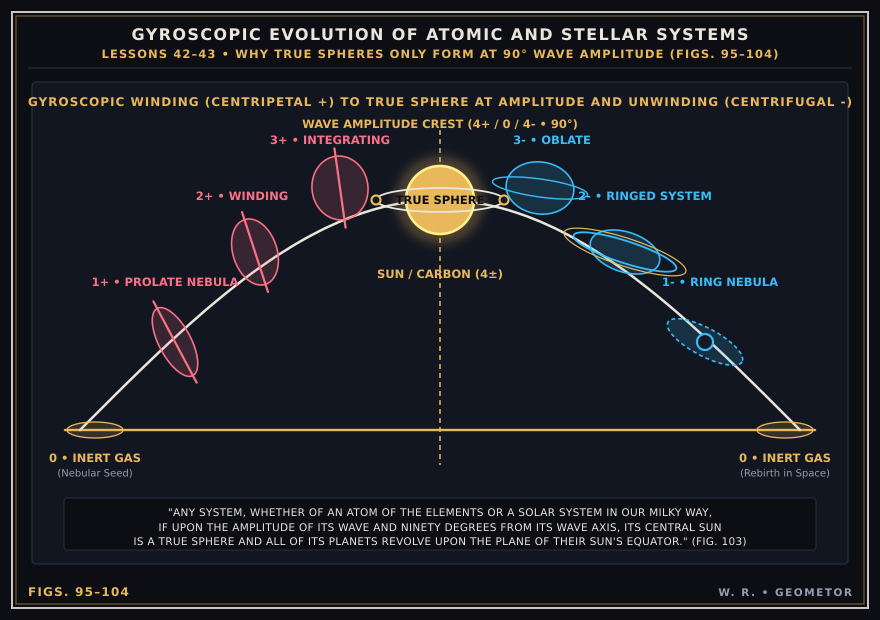
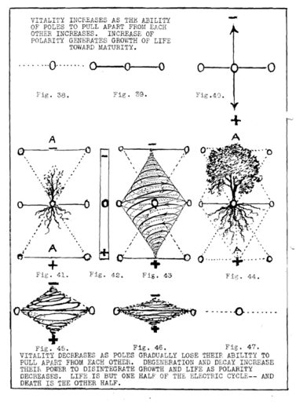
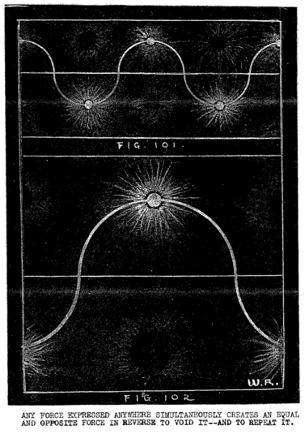
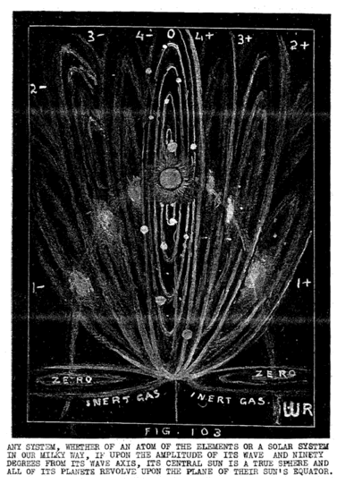
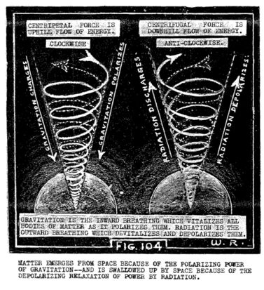

LESSON NUMBER 42 ONE MORE STEP TOWARD BUILDING THE CUBE-SPHERE WAVE-FIELD¶
GEOMETOR Revamped Cosmogony Plates
This lesson’s core geometric diagrams have been reconstructed as precision parametric vector plates:


GEOMETOR Vector Reconstruction (Figs. 95–104): Gyroscopic Winding to True Sphere at 90° Wave Amplitude and Unwinding.¶
In the progress of these lessons the time has now come to clear up much confusion regarding what is so commonly called the “curvature of space”, and sometimes referred to as “this curved universe”.
We must clarify this confusion. In these lessons we have repeatedly said that all motion is curved. That does not mean that stillness is also curved. Motion springs from stillness and returns to stillness. The example of the fulcrum and the lever fully manifests this principle.
Just as we live in the changing physical universe and the unchanging spiritual universe simultaneously, so also do we live in the universe of motion and the still universe of non-motion simultaneously.
Likewise, we live in the undivided universe of Mind-knowing and the divided universe of Mind-thinking and sensing simultaneously.
In order that you may more clearly understand the relation of stillness to motion, the undivided in relation to the divided, the changing in relation to the unchanging, and the spiritual Light in relation to the physical lights of wave motion, we will draw a simple picture which you may remember and understand more clearly than you would remember a finished picture of the same thing.
Here it is:
You have a desire to manifest an idea of yours.
You ask God to give you the power, and the substance to fulfill your desire.
God gives you six mirrors of His still Light, all put together in the shape of a perfect cube. Within the six are three more mirrors of His Lights all three set at right angles to each other.
God then says: “Here is the power, and the substance you have asked for to fulfill your desire and manifest your idea. My magnetic surveyors have measured it out for you in My undivided universe in the exact measure of your desire.
“I give you free will to do as you wish within the six mirrors of My Light which balance and control your actions from without, and three more balancing mirrors within the six which control your actions from within. For I say to you that these nine mirrors of My Light are My LAW, and they are also the means of enforcing My Law.
“These nine Light mirrors of zero curvature and zero motion are your limitations, and the measure of them is the measure of your desire. You may change their measure, and your limitations, by changing the intensity of your desire, but beyond these nine you cannot go in any direction without arriving at the zero of your beginning and ending
“Whatever you do in My divided universe, whether good or bad, balanced or unbalanced, or helpful or hurtful within the boundaries set for you will come back to you in the measure set by you for your own universe of your own desire.
“For long aeons you have built your universe in your own image and desire. You have manifested that image of yourself for ages upon long ages, for you will not know Me in you.
“There will come a time when you shall begin to know the Light of Me in you. You will then manifest Me. You will then build your universe in My image. To know the Light of Me will be your sole desire. To seek and find My kingdom will be your sole purpose.
“What you do for yourself you do for all for all are ONE in Me You may reflect and extend your desire to all the universe to make a world of your desire with the desires of other men, but naught of motion, or change or unbalance, or curvature shall pass My equalizing boundaries set for you and all mankind without being voided where My zero of rest ends all moving things, and begins them again at that zero of rest which is alone in Me.”
THIS THREE DIMENSIONAL CUBE UNIVERSE OF NINE¶
The above unconventional manner of telling a scientific story may not be true to text book form but more of scientific, philosophic and moral truth can be gleaned from it than many times that space could tell in more conventional lesson form.
It is a good preliminary to the more detailed analysis of the radial cube-sphere universe of wave motion which man has not yet begun to fathom. It also graphically states that man is in the midst of a universe of law and order which he may violate to any extent he chooses, but at his own cost, or he may find the glory and ecstasy of working with the law and order which surrounds him when he at last sees the Light which leads him out of the dark.
Having had, and enjoyed this allegory or descriptive interlude let us now return to lesson form to better understand that our physical universe of motion consists of cube-sphere wave-fields within wave-fields, both majestic and microscopic, one within the other and without the other throughout a shapeless, boundless infinity of imagined space which is as unreal as the cosmic cinema illusions which are forever being cast upon it.
It may be that you are not yet sufficiently advanced to understand the illusion of it, but you certainly are sufficiently advanced to understand the mechanics of it.
This shall be our purpose. It seems difficult to some to comprehend how planes of zero curvature can be possible in a curved universe of wave motion.
Let us begin to make this fact of Nature comprehensible by a very simple example of how a curved wave universe rises from flat planes of zero curvature, and how two-way motion simultaneously springs from an unchanging state of rest.
Although this fact has been graphically exemplified in relation to the fulcrum and lever in Figures 89 to 92, and in other places during these lessons where motion has been divided by equators where no motion is, let us exemplify this question in another way.
Let us sit together beside a quiet lake whose surface is completely at rest. As we look down upon it we realize its unchanging aspect. It is all the same in every direction, no matter where we look. One could not locate a point upon it and again relocate-that point.
Why is this? It is because the stillness–or equilibrium–or balance which characterizes that surface has not yet been divided by desire to manifest motion by exerting some force to disturb that stillness.
We now supply that desire and exert the forces needed to divide that one unchanging condition of stillness into two opposed conditions of motion by hurling a stone into the water. See Figure 95.
The instant the motion of the stone begins in your hand you have begun to divide the undivided universe into a series of nine equators which not only control the disturbance of universal balance at every point of its path but the wave-fields which bound these-equators are surveyed and measured by God’s magnetic Light for repetition all over His universe at the rate of 186,400 miles per second, which is seven times around this earth every second. It seems incredible that such an unimportant event should be recorded in our sun seven seconds later, or in our nearest star nine years later, but such is the fact.
In Figure 95 the water surface is marked A and B, the stone is marked C and the place of impact upon the water surface is marked D. In Figure 96 the harmonic tones for sequential waves are marked E, all extended from D.
Figures: 97–98 –99 and 100 exemplify the building up of the-octave wave caused by the falling stone and the sequential repetitions of it upon the lake’s surface. It is important to note that every wave is repeated in reverse to its neighbor which divides it by its cube system of nine equators. It then mirrors it in reverse to its neighboring wave-fields.
Naturally you cannot see the cubic wave-fields of measured and mirrored

Archival Plate (image069.gif)¶
Light which bound them, but you can KNOW them; and in knowing them you can better comprehend God’s ways–and also know that God’s ways apply to you, for they are your ways, God’s ways are balanced–and your ways must be balanced within the wave-field in which you act.
That which you can see, however, is the result arising from thus dividing stillness into motion to produce changing EFFECT from unchanging CAUSE. You can now locate a point and relocate it. Likewise, you can count and measure that which, heretofore, was impossible to count or to measure.
Likewise, you can see that what you have given to gravity by simultaneously taking from space, you must sequentially regive to space by taking it from gravity. You can, likewise, see that the moment the motion of wave building began, curvature also began upon both sides of the one equator which you can see (the wave axis) and curvature likewise began upon both sides of each of the nine equators in every wave.
And as you sit there and watch the lake surface become still once more you will know that all curvature ceases when motion ceases, just as all change and dimensions of lengths, breadth and thickness which accompanied motion disappear when motion ceases.
You may also learn another great lesson in watching troughs and crests of waves interchanging with each other constantly until there are no longer any troughs and crests. You would be greatly surprised if waves piled up to crests and down to troughs and stopped there. You know that that is impossible. You know that when one balanced condition is divided into two that they must interchange. You know that the wave motion will continue until the water becomes calm again.
The lesson which you can learn from this is that all motion is the result of dividing a balanced condition into two unstable, or unbalanced conditions. If therefore, all motion is out of balance the only reason for motion is that it is seeking balance.
Now consider the trough and the crest of a wave. Both have been extended from the calm surface of the motionless water by dividing the one condition into two. That calm surface represents stability. The wave trough and crest represents instability. The calm surface becomes one of the nine equators which controls the pulsations of its extended waves.
As soon as the measure of desire for motion which the stone extended to the water dies out all wave troughs and crests will become one with their common equator from which they were extended.
The spiritual lesson which you may learn from this is that whenever you perform any action whatsoever you are dividing a balanced condition of rest into two unbalanced conditions which MUST REACT UPON EACH OTHER, AND INTERCHANGE WITH EACH OTHER TO FIND THE BALANCED CONDITION OF REST FROM WHICH YOU EXTENDED THEM.
That means that whenever you do anything, or say anything, whether in your business or social life you have set something in motion which is going to be GOOD for you if you can keep its extensions in balance, or it is going to be BAD for you, and cause you to face many problems, if you do not keep the interchange between the two in balance with each other.
In your control of those actions, which you set in motion, lies your happiness, success, prosperity and health, or the opposites of these qualities.
With knowledge of God’s ways to help make them YOUR ways your decisions which cause all of your actions will conform to God’s law of rhythmic balanced interchange in everything you do, and it will be this knowledge which will bless your life where ignorance of it could ruin your whole career.
WE NOW BUILD THE NINE EQUATORS OF CUBE-SPHERE WAVE-FIELDS¶
Let us look more into God’s ways. Let us have deeper understanding of how He makes His laws and how He enforces them. We KNOW that God’s laws are inexorable. We know that it is impossible to escape the penalties of any breach of His law, and we should know that it is equally impossible to escape the blessings which come from working with His law.
God has but one law, His law of BALANCE. His universe is balanced. It is at rest as an equilibrium. To disturb that equilibrium is impossible, but one can appear to disturb it by dividing it into pairs of oppositely unbalanced conditions which constantly interchange to keep in balance with each other.
If you hurt yourself by losing your balance and falling, God is not punishing you for it. You are punishing yourself. God is not angry with you for hurting yourself, nor is He sorry for you. You have but had one more experience in trying to live within His orderly universe and each experience should draw you closer to God.
To draw closer to God you must know His ways, for His universe is orderly and balanced. Your universe must, likewise, be orderly and balanced.
Let us quote here what God tells us of His ways in The Message of The Divine Iliad: “I am Balance. In Me all My imaginings are balanced in their seeming unbalance. “I add, but that which I add to one pulsation of My thinking I subtract from the other one. “I divide, but as I divide I equally multiply.”
That is God’s way. If He violated it ever so slightly there would be disaster of cosmic proportions in His heavens as stars, suns and planets crash together instead of continuing in their paths for ages, always being in balance with each other even to the weight of one milligram.
Why does a man’s business crash–or why does he lose a friend–or become ill–or meet with an accident? The answer is all contained in that one word BALANCE. Now let us graphically illustrate, step by step how God will multiply your desires and give you greater powers if you work with Him and His law.
First you must have a desire which you wish to express by giving it a body and setting it in motion. No matter what that desire is, whether it be to invent something, build a business, become a doctor, or lawyer, or builder of bridges.
Then–go and talk to God about it. Ask God to work with you to fulfill your desire. Ask Him for the power and the substance to fulfill your desire. Ask Him also for the knowledge to work knowingly with Him. Ask also for His inspiration and His ecstasy so that your creation will be masterly and enduring.
You will find yourself spending much time in meditation with God concerning your desire. You will talk much with Him. You will hear Him counselling you, thinking with you. Through your
Inner Voice you may hear Him say: “In the measure you ask I will give, but I counsel you to ask little and learn to balance that before asking more”
At the precise moment you begin your very first action to set your idea in motion God will give you six mirrors of His invisible Light shaped like a cube. Within those six mirrors of Light are three more, all set at right angles to each other. And the measure of this cube of Light which He gives you is the measure of your desire.
As the measure of your desire grows, as it must grow if you work knowingly with God, the nine mirrors of Light grow with it to contain your growing idea. There is no limitation to the dimensions of your achievement so long as you work knowingly with God and do not ask for a larger measure at a time than your knowing can keep in balance with the law of balance which those nine mirrors of Light MUST enforce.
SOME FACTS ABOUT THE CREATION OF BODIES¶
Let us now remind you that visible matter emerges from invisible space and is swallowed up by it. Also that the physical universe of two visible lights arises from the One invisible Light which God is, and must return to it–as motion likewise returns to stillness–and sound disappears into the silence from which it sprang.
God’s Creation is, therefore, the result of God’s desire to give visible form and motion to His invisible Idea. To accomplish this purpose He builds a material body of visible light which is His universe.
Your creation is, likewise, the result of your desire to give visible expression to your invisible idea.
In other words, all that God ever does, or you ever do, is to build visible bodies out of invisible Light and set them in motion to manifest invisible idea for a period of time. All bodies eventually disappear into the invisible equilibrium from which they sprang and reappear in rhythmic periodicities of time.
God’s only workers used in building His universe are the two electric workers which divide His Light of knowing into the two lights of His thinking.
Each of these workers pull away from each other in opposite radial directions. One of them pulls inward toward a point of concentration and thus a pressure of compression is brought into seeming being. The other worker thrusts outward in the opposite radial direction and an opposing pressure of expansion is brought into seeming being.
Compression is the mechanical manifestation of the Creator’s concentrative thinking and expansion is the mechanical effect of His decentrative thinking.
Everything that is created in this universe is the result of interchange between these two opposing pressures in the measure of desire for creative expression. Masterliness in any effect of Creation lies in keeping these two opposing forces in balance.
WE PAUSE HERE TO TALK ABOUT PRESSURES¶
It is important that you understand what we mean by pressures which exist only in the divided universe of motion. Motion is impossible in an equilibrium. If you sit in a closed room of even temperature with only one pressure condition you cannot possible feel any motion taking place in it.
If however, you open a window you will feel a rush of cold air coming through the window to equalize the cold air which is outside, and the warm air which is inside. An equator divides the two. When the pressure, which is outside, equalizes the pressure which is inside, motion then ceases–and the invisible equator disappears also.
Or suppose you sit in that closed room of equilibrium pressure where all is motionless and still. If you put a cake of ice in one end of the room and a piece of molten iron in the other end, you have divided the one balanced condition into two opposed pressure conditions, and an invisible equator arises between the two to control the universal balance, which that opposed pair has seemingly upset.
An electric current immediately appears, for wherever motion appears it means that the two conditions of polarity exist, and polarity is impossible without an electric current to divide stillness into two opposing states of motion.
Now you sit at the wheel of your car but it is perfectly motionless. The power to move you at great speed is there, yet the car does not move. Why is this? It is because you have not divided the power of your cylinders into two opposing pressures, which resent that division and try, with all their might, to get back to the one condition of REST from which they sprang
For that sole reason each pressure interchanges with the other, each from its own side of the equator which divides and controls their opposition.
Instead of the one zero pressure condition which is in your motionless car you extend a central point in that zero of stillness to two other zero points. You now have a fulcrum and a lever which will cause your car to move the moment you divide that undivided condition by creating the two polarized electric conditions of compression and expansion. These two opposing pressures interchange with tremendous force in the endeavor of each to seek the balance of rest from which they were divided by an equator set up at the centering zero to control that interchange.
When you think of opposing pressures, always remember that the power which either one has to move, is borrowed from the other one. A hundred pound pressure of compression is possible only by evacuating an equal 100 pounds from the opposite side of an equator which divides the two.
If, for example, you connect two tanks of equal size by a tube, and pump the air out of one into the other, you have multiplied the pressure of one by equally dividing the pressure of the other. What you have added to the zero of their mutual equilibrium in one tank you have gained by subtracting an equal amount from the zero in the other tank, which is on the other side of their dividing equator.
You have added a 100 pound pressure on one side of an equator by subtracting a hundred pound pressure from the other side. Mathematically expressed it would be as follows; X plus zero equals X minus zero. Zero has not been exceeded in the operation for the total adds up to zero.
You have but divided an equilibrium into pairs of oppositely unbalanced conditions which strongly seek balance in their mutual equator.
These opposite electric conditions do not attract each other as the Coulomb law states. The positively charged tank is endeavoring to explode outward to find balance in its equator, and the negatively discharged tank is endeavoring to explode inwardly until its pressure has been equalized with the equilibrium from which it was divided. When the equalization takes place motion then ceases; the polarized condition depolarizes and the equator disappears.
The condition which electricians term “a dead storage battery” has taken place. It is as though the lever is removed from a fulcrum. The fulcrum is still there, with all of its power for expression ready to be expressed at any time the lever is again placed upon it for the purpose of dividing its balanced power into two equally unbalanced powers which resent that division.
WE PAUSE AGAIN TO TALK ABOUT ENERGY¶
Now that these many lessons have clarified for you the meaning of polarity as being the DIVISION OF THE UNDIVIDED ONE UNCONDITIONED EQUILIBRIUM OF THE MAGNETIC LIGHT OF GOD’S KNOWING INTO THE TWO CONDITIONS AND UNBALANCED LIGHTS OF HIS ELECTRIC THINKING you will now fully understand how untrue to Nature is the claim that heat is energy.
You now understand that heat is one of the two conditions which result from electric polarization and that heat is only one end of the lever while cold is the other end.
Heat is borrowed from cold and cold is borrowed from heat. They are one
Heat is the result of compression. Cold is the result of expansion. Interchange between the two performs work which the interchange continues, but ceases when the two equalize each other at their equator.
Gravitation will perform work. Witness, for example, the falling waters of Niagara which generate electric current by turning a wheel.
Radiation will also perform work. Witness, for example, the rising air through a chimney shaft which also will generate electric current by turning a wheel.
Cooling vapor will perform work by contracting. Witness the condensation of vapor into a cyclone, or a river.
Heating vapor will also perform work by expanding into steam. Witness the steam engine.
The first law of thermodynamics, which says that heat is energy, is not true to Nature, for heat only expresses energy when cold interchanges with it–and cold, likewise. They are equal mates. They are two opposites in polarity. GRAVITATION POLARIZES–RADIATION DEPOLARIZES. Fig. 104, p. 739.
Likewise, the second law of thermodynamics is not true to Nature. This second law says that “energy cannot run uphill. It can only run downhill”. In other words radiant energy has no compensating opposite which generates. Hence the expanding universe theory, “Uphill” means higher potential. “Downhill” means lower potential.
Water which is rising into the clouds is an expression of radiant energy. That same water which condenses as rain and falls into the rivers and Niagaras of earth is an expression of generative energy. GRAVITATION MULTIPLIES ENERGY.
Gravitation and radiation are equal opposites which interchange continually to create this electric universe of matter and perform all of its work.
Gravitation is one stroke of the piston of energy which runs uphill to perform work by contracting. Radiation is the other stroke of the piston which runs downhill to perform work by expanding. RADIATION DIVIDES ENERGY.
This whole universe is one majestic compression-expansion engine. Likewise, it is a huge electric battery. Would you say of your car’s self-starter battery that the expansion stroke of the piston did all of the work–which is equivalent to what science says about radiant energy. Now would you claim that your outgoing breath alone kept you alive without need of an incoming generative breath? No of course you would not.
Then why say that heat is energy–and that cold is less heat? Whenever you are puzzled regarding such questions review in your Mind the temperature cycle given earlier in these lessons, which reads as follows: Cold contracts–contraction generates–generation heats–heat expands–expansion radiates–radiation cools–and the cycle repeats itself endlessly.
If this seems complicated simplify it as follows: Cooling bodies gravitate and heat as they gravitate –heating bodies radiate; and cool as they radiate.
Thus the interdependent pairs of opposite pressures gravitate and radiate in opposite directions to keep the heartbeat of this universal compression-expansion pump–which Creation is –in operation. One is as important as the other. Without each other each one would be powerless.
The entirety of this divided (polarized) universe consists of high potential visible bodies of solid gravitating matter, surrounded by low potential invisible bodies of expanded radiating matter. There is not one inch in all of this universe which is not composed of these two conditions of matter divided into wave-fields whose equators control these divisions and insulate each wave-field from all others.
We will draw a graphic picture of how polarization keeps this pumping process going on forever. Let your imagination amplify this descriptive picture. Imagine the invisible pistons which forever pull inward toward a center, and thrust outward from it, to be giant arms of the universal two-way pump which moulds hot suns to pattern the starry firmament of God’s heavens.
Then let your imagination liken them to magic knitting needles, countless trillions of them to every cubic inch, shuttling inwards and outwards in the radial loom of the universe, tipped with rainbow threads of light to weave countless patterns of the myriads of living, growing things which spring from God’s earths into His heavens to manifest the thinking of His omniscient Mind.
Keep on imagining. Think further–and deeper –until you find yourself fascinated with the countless variety and complexity of patterned forms which those two interweavers of God’s light rays bring out of the unseen universe of no THING, and no WHERE, countless many THINGS–and an EVERYWHERE.
Out of this two-way electric motion Creation BECOMES.
That is what we say because that is what we think. We think of Creation as something which IS. We never think of it as something which only SEEMS.
We never think of the countless myriads of growing-living-dying-borning bodies as MOTION ONLY–transient spiral motion with no permanency whatsoever.
It never occurs to us to think of a granite rock, which so rigidly ignores our sledgehammer blows, as but the two-way opposed spiral interweavings of light-threaded cosmic needles which shuttle in and out from cold to hot, and hot to cold a trillion times faster to weave that granite rock than it moves to weave our soft flesh.
Try to imagine these interweavings of polarized light threads as being the inbreathing-outbreathing sequences of the bodies which they are eternally building and tearing apart to rebuild.
Try to think of dense solids, which you can so unmistakably see and feel, as but closely packed little light-waves which become very hot because they are in each other’s way. Then realize that they got that way because the breathing process of the universe divides light into visible solids, which we think of as bodies, and invisible gases, which we think of as space. We never think of these two as one, or that one is living and the other is not. Yet we know that our own bodies of gravitating matter cannot live without interchanging with bodies of radiating matter.
Constantly remind yourself of the fact that the continuance of every body, both visible and invisible–gravitative or radiative–positive or negative–is dependent upon receiving a continuous supply of that half of itself which is on the other side of a dividing equator.
These two conditions MUST interchange with the other. Each must sequentially become the other.
Consider your own solid body, for example. It is surrounded by gases which have become gases because that which is your solid body has been pumped out of it. Your solidity is due to its emptiness. YOUR INBREATHING evacuated it to make YOU. It is the gift of space to YOU. You cannot live unless space continues to give of itself to YOU.
Conversely, space cannot continue to be emptied–or evacuated–to give to YOU. You must REGIVE. That is the law. So you regive to the other half of your divided body that which it gave to you. To do so you breathe OUT –then in again. That is what interchange between opposites means.
THE MEANING OF INTERCHANGE IN BREATHING¶
Now what happens when you breathe in? The low potential which you breathe in from the cold of space becomes high potential which heats your body as it compresses within you. It GENERATES energy for your body. You then regive to space that which space has given you. You breathe out into space the compres[sed] high potential which you transformed from space. Your compressed hot breath expands and cools. You RADIATE your high potential energy into low potential by expanding a great volume of space on the other side of a dividing equator, which becomes cold as a consequence of its expansion.
Now imagine these two unbalanced conditions finding themselves as uncomfortable in keeping up that strain of pulling away from each other, (and their equators) as two children would be who were playing seesaw, and one was high above their equator and the other as far below. Just as the two children must reverse their conditions by reversing their positions, so, likewise, the two interchanging interweavers of light into bodies must reverse their conditions by reversing their positions. Each becomes the other, as all opposites in Nature continually do.
Let your imagination dig deeper still in relation to those two forever interchanging lights of motion, Let us think of the incoming red light–which transforms-cold into heat in us–as our incoming breath. Conversely, let us think of the outgoing blue light–which transforms heat into cold in us–as our outgoing breath. Think this over for awhile–and breathe in and out slowly and concentratedly–while you think it over
Now look about you and see all other people breathing in and out in wave sequences as you do. And see them moving about, as you move about, with great energy while they breathe in and out. Now give thought to the impossibility of any of them moving about if they stop breathing.
Then look about and see growth everywhere you look–growing bodies of people, trees, flowers, insects. Those buds of yesterday are flowers today. Newborn leaves almost visibly unfold. A great tree branches out over your head which you brought home under your arm the day your baby was born. And the field is red with strawberries which were not there last Sunday when you walked there.
Why do bodies thus grow? What is growth? These bodies all breathe in and out as you do–and they grow as you do–flowers–trees–insects–strawberries in the field.
Knowing what you now know of motion can you not clearly see that motion alone makes bodies–and–conversely–bodies are naught but motion.
Give further deep thought to this and you will then readily understand that growing bodies are the result of inbreathing and outbreathing. Instead of saying–all bodies breathe in and out we go farther than that and say that all bodies are but recordings of the universal breath.
Can you not now compare the incoming-outgoing breath with the concentrative-decentrative sequences of God’s electric thinking?
We have many times said that the creating universe is but the electric record of God’s thinking in forever repeating cycles. Can you not now see that all interchange between all pairs of opposite conditions is for the one purpose of recording THOUGHT in MATTER?
It is really very simple. Inbreathing rolls up little spheres of matter and adds them to the body to make it grow. Your body grows because you breathe in from space to make more cells for your body.
The tree grows that way. So do flowers–and forests–and planets. The sun grows that way. It breathes in for six years and grows very hot, so hot that it boils near its equator and forms great spots which we can see. Then it breathes out for the other half of its cycle and cools very much, so much that part of its molten liquid condenses to add to the solidity of its polar parts.
We do likewise. We have a life cycle of 70 or 80 years just as we have a breath cycle of 25 or 30 to the minute. Our incoming breath generates more little vital cells for one half of our life cycle than our outgoing breath radiates away from us.
The outgoing breath then becomes stronger and radiates more of you into your other half. Instead of increasing the intensity of your polarization you are then depolarizing. Instead of living vitally you are slowly dying by devitalizing.
Try to realize that every effect of motion in this universe means that it is for the purpose of expressing IDEA by dividing it into TWO ASPECTS OF THAT IDEA.
LIFE, for example is one IDEA. When divided and set in motion it has two aspects instead of one. The two are LIFE and DEATH–both being ONE.
BREATHING INWARD expresses one half of the LIFE IDEA, BREATHING OUTWARD expresses the other half. Each leads to the other.
When your Consciousness is more awakened you will think of life and death as you think of day and night–with full knowledge that morning will again come as surely as night follows day, each leading to the other with periods of rest between to mark the division of ONE into a seeming TWO in every phase of your existence on earth as a body.
That is what LIFE and DEATH mean. That is also what inbreathing and outbreathing mean. Each manifests the other and each leads to the other–all for the purpose of manifesting LIFE–by living it and LOVE by expressing it through the action-reaction of GIVING and REGIVING.
Again we say–THERE IS NO DEATH, THERE IS NAUGHT BUT LIFE.
LIFE is a wonderful journey through LIGHT of ETERNAL DAY which comes with the coming of dawn–while DEATH is the glory of awaiting the LIGHT which cometh again at the coming of dawn.
WE SUMMARIZE AND SIMPLIFY¶
We often gain greater comprehension regarding new ideas which we are trying to master by repeating them in other words and other forms which have the same meaning but are approached from different angles. For this reason read the following two paragraphs slowly–and with great concentration.
As the cold blue light-threads of space spiral across their wave-field equator toward their north pole–which, likewise, is their gravitative center–they compress and turn red–then orange–then yellow-white because of generating cold into heat as their inward spiral twistings wind light up into compressed incandescent spheres of high electric potential.
Conversely, as the red light threads spirally recross their wave-field equator toward their south pole –which, likewise, is their radiative center–they expand from yellow to green–then to blue and blue violet because they radiate heat into cold as their opening spirals unwind those hot visible spheres into cold invisible ones, for rebirth into visible ones.
Do you realize that what is written in the above two paragraphs is all there is to this whole physical universe of living-dying bodies of matter? We have but described two ways of seeming motion which forever manufacture visible and invisible pairs of bodies. These continually interchange with each other so that each half alternately becomes the other half. This interchange is repeated eternally, forever and forever. That is what CREATION is–just a Mind-imagined journey from rest in the Light, to rest in the Light.
Do you realize what this means? For one example consider our sun which centers the four or five hundred million mile disc–or cone base, upon which our planets spiral outward into their depolarizing oblivion.
In order for that hot dense sun to shine in the skies as it does there must be an equal and opposite minus black negative hole on the other side of its equator. Some future day, aeons upon aeons hence, our sun will shine where that evacuated black hole now is–and our planets will radiate away from their parent sun toward their depolarizing zero just as they now do in their present position. Their reincarnation in their own pattern is as true regarding solar systems as they are regarding man, and all resolving-dissolving, living-dying integrating-disintegrating things. Compression anywhere is balanced by equal expansion on the other side of their mutual equator. Each must become the
other alternately, See Figures 101 and 102.
Now read the following five supernal paragraphs with equal concentration.
CREATION is an eternally continuous cosmic game of seesaw played between two electric body builders, destroyers and rebuilders which forever oscillate between hot centers of high potential compressed spherical solids, and cold centers of equally high potential expanded spherical holes, for the purpose of manifesting the IDEA of God’s KNOWING by simulating that idea in the moving form images which manifest His THINKING IDEA is never created. It is but SIMULATED.

Archival Plate (image070.gif)¶

Archival Plate (image071.gif)¶
The fulcrum of the moving levers of the cosmic seesaw which gives to the universe its heartbeat, is the stillness of the undivided One Light which God’s KNOWING is.
The moving levers are the two equally opposed lights of the divided electric universe which God’s THINKING is.
Every measure of positive force developed by one extension of the lever from its fulcrum SIMULTANEOUSLY develops an equal negative force in the other extension, As the cosmic pendulum moves one way to manifest power its invisible counterpart moves the other way with equal power to pull it back for repetition.
The motivating force which seemingly divides the One Light of universal rest into north pole centers of compression and south pole centers of expansion is DESIRE to create moving form images to manifest ideas which they but simulate.
You are likely to become confused by the two references in paragraph 3 to high potential centers being equal in both positive and negative counterparts on opposite sides of equators. Let us be sure you understand this principle. High potential develops in the radial direction toward both centers and low potential develops in the direction which is radially away from both centers and toward mutual equators. Potential is zero at every dividing equator. Low potential then reverses to high as each opposite pulls away from its equator toward either of the two opposed centers.
Witness, for example the two cells of a storage battery. The potential in each cell is equal. The power of one to pull inward, centripetally toward its center of gravitation, is equal to the power of the other to thrust outward, centrifugally, from its center of radiation. The equator for both opposed cells is between them. Potential is zero upon that plane, therefore, potential lowers to zero in the direction of depolarization and increases to maximum as polarization intensifies in the two polar directions.
All particles of light which are ejected from either the cathode or anode poles as heretofore stated in earlier lessons, are negative “electrons” which are expanding and discharging as their potential lowers on their way to their common equator. Immediately they pass that zero plane they reverse their “charges”. Both become positive. They become “positrons”. Both are then charging.
All light particles are alike. When found in different relation to their equators, and different positions and directions of motion, they are called by different names–such as neutrons–when they are on wave amplitudes–photons, positrons and other such names, when found in other parts of the wave.
Nor are these few names all they have. All of the known ninety odd elements are made up of these same particles but all have different names when found in different positions in their waves.
Elements exhibit different characteristics because of their differences in gyroscopic relation to equators and amplitude. If light particles are part of systems which rotate upon a plane near wave amplitude, we say they are iron, or copper, or boron, and many others.
If their gyroscopic relation is on wave amplitudes–90 degrees from wave axes–we say they are carbon, or silicon, or sodium chloride and many others. See Figure 103.
Chemists and physicists commonly believe that all of the elements are different substances. There are no substances in the universe. There is naught but motion which simulates substance. Every difference in motion causes each so-called substance to seem to have different attributes.
If we remember, however, that what we think of as different elements are but different pressure conditions of the same kind of light particles, our ability to understand God’s ways will become simplified.
A good example of the above statement which demonstrates that elements are not separate things, but just different pressure conditions, was given in lesson No. 41 which explained the fact that the metallic elements completely lose their metallic attributes when two opposite metals united as a salt. They also lost other attributes, such as ductility, malleability, conductivity or fusibility by heat or electric conductivity.
It would be well to register the following very important fact about matter in your Mind at this point. All matter is formed in light waves. As there are no two points in any wave where the pressure is the same no two particles of matter can be the same in potential or condition.
All forming matter is of the potential of its place of birth, therefore, all particles of matter float in orbits of equal potential in the system of their birth always following their primaries, and always changing as their primaries change.
The same particle of light which is now sodium, will progress all through the nine octaves of the elements, and be known by many names as its attributes change to the attributes which distinguish one element from another.
CONCLUSION¶
In explaining the cube-sphere principle, and the division of the cube into its nine equators which not only enforce God’s One Law of Balance, but determine the octave tones of the spectrum and the elements of matter, it is necessary to be more than explicit. The reason for this is because the entire basis of the principle lies hidden in the invisible universe beyond the powers of scientists to determine by research.
Such knowledge can come only from the Consciousness of one who has been enabled to see the universe as a whole. Cosmic illumination makes that possible by not only freeing the mind from body limitations but by multiplying extrasensory perception during the period of illumination to such an extraordinary extent that the sense perception reaches through the entire 360 degrees of the wave cycle, instead of but a small arc of that cycle.
The more that humanity understands the inexorability of the workings of those balancing equators of Light which enforce universal balance in all things, the more mankind will understand the hopeless futility of defying God’s law by working against it.
Conversely, the more that mankind understands the tremendous power one gains by working WITH God’s Law of Balance, the more mankind will advance individually and collectively as a transcendent race.
Therefore, we again say to you that the measure of your power to find happiness, peace, prosperity and glory in masterly achievement lies in the measure of your KNOWLEDGE of God’s ways and your DESIRE to make God’s ways your ways.

Archival Plate (image072.gif)¶